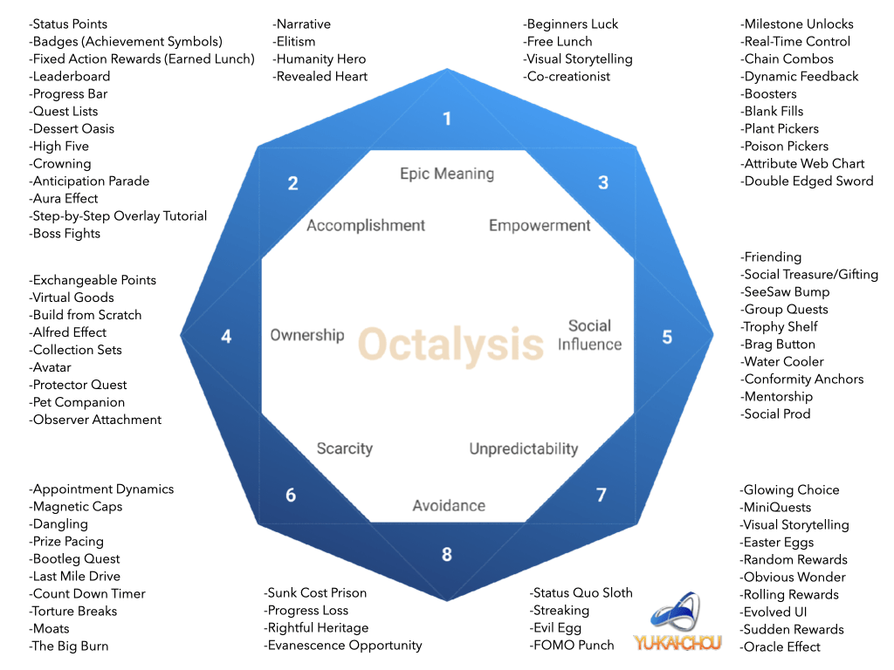
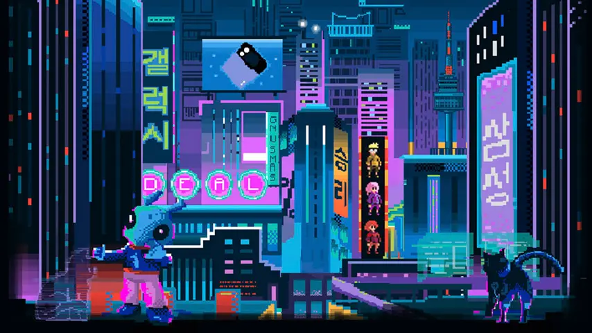

Photo by Andrew varnum on Unsplash
Photo by Andrew varnum on Unsplash
Gamification and Human-Centered Design: Creating Engaging User Experiences
At Cheil Germany, a significant portion of our work revolves around helping brands deliver exceptional user experiences to their end consumers. The Black Friday campaign for Samsung is a good example. It's one of our favorite projects of the year because we get to be very creative and implement innovative ideas on a European scale. In recent years gamification has become one of our core strategies to increase user engagement during this important international shopping holiday.
Gamification is a fascinating topic. To learn more about it, I recently started reading Yu-kai Chou's book „Actionable Gamification: Beyond Points, Badges, and Leaderboards“, which contains many helpful concepts to consider when designing great user experiences.
The book's main message is that any good user experience needs to speak to eight Core Drives. If an experience is designed with these Core Drives in mind, even previously dull interactions could be turned into engaging activities. I believe that gamification or „Human-Centered Design“ as Yu-kai Chou prefers to call it, can be applied in almost any context.
The 8 Core Drives
 Yukai ChouEverybody knows how hard it is to break bad habits. For instance, I tried to quit smoking multiple times. When I finally succeeded, it was simply because I turned the „quit smoking“ objective into a gamified experience. Drawing on Core Drive 2 (Accomplishment) I created a kind of progress tracker that constantly reminded me how many days had passed since my last cigarette. Thanks to this visual cue and the desire to prolong the „streak,“ quitting got easier and even somewhat fun.
Another one of my favorite examples of effective gamification is the app Freeletics. The app uses various game elements, including points, badges, and leaderboards to keep users engaged. Not only do I feel good about myself when I achieve another „perfect week“ but I also feel frustrated when my overall Freeletics score drops because I skipped a workout. Here Freeletics effectively employs Core Drive 2 (Accomplishment) and Core Drive 8 (Avoidance) to help me achieve my fitness goals.
Gamification can come in many (sometimes very subtle) forms. Yu-kai Chou distinguishes between explicit and implicit gamification. Explicit gamification describes situations where users are actually playing a game, whereas implicit gamification is the use of game elements and techniques in tasks that are not strictly considered "playing."
A good example of implicit gamification, in my opinion, is the progress bar you often see when reading online articles (like this one). Previously, you might not know how long it would take to read an article. You'd then scroll down to see how long the article is. At least for me, this is often the point where I navigate back to the search results because I don't have the attention span for such a long article. A progress bar at the top of the page seems to mitigate this effect by providing immediate feedback on how far I've already read, encouraging me to read on.
The games we developed for Samsung's Black Friday campaign are an example of explicit gamification. Together with BoraBora Studios, Cheil Germany created a series of mini games that showcased Samsung's new AI-powered products and allowed players to win coupon codes that could be redeemed inside the Samsung online store.
Are you curious how your customers' experience might be improved through gamification? If you have questions around these topics, feel free to reach out!